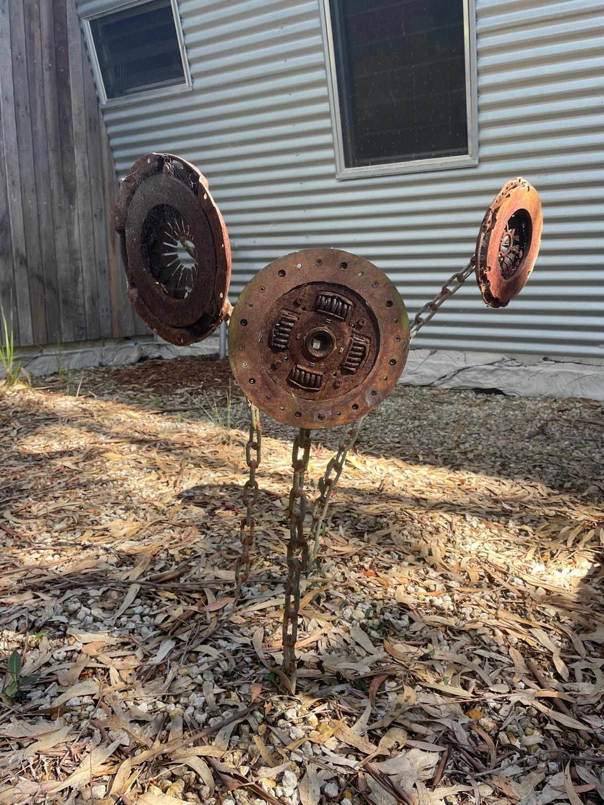
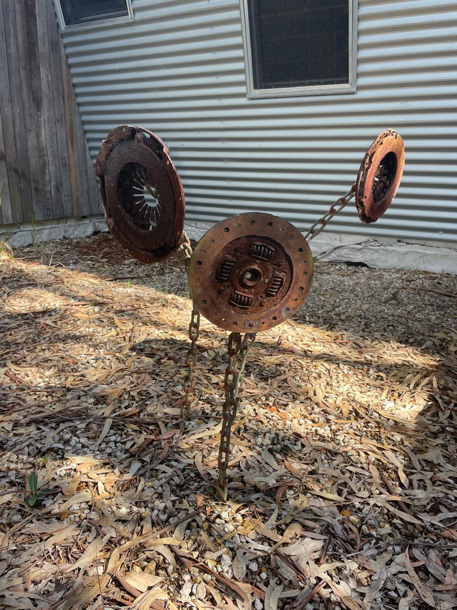

METAL / 05
Sprouting
- WORK
- Three-part garden sculpture
- YEAR
- 2022
- MEDIUM
- Discarded steel cogs & chain · Welding
- CONTEXT
- Personal project · Undercover Artist Exhibition

Overview
Sprouting is a group of three metal flowers made from discarded cogs and lengths of scrap chain. Designed for the Undercover Artist Exhibition, the piece can be placed in a garden bed, where its rusted industrial components take on the shapes of organic growth.
The contrast between the weight of the metal and the lightness of the flowers was central to the idea. I wanted the stems to look as though they were growing upwards, even though the chain from which they were made would ordinarily hang down.
Design Brief
I set out to transform material from a scrap-metal pile into a medium-scale exhibition sculpture. The constraints were deliberate: use the three cogs I had found as the flower heads, build with scrap metal, and rely on welding to hold the structure together.
Each cog had a different shape, so I wanted the final composition to celebrate those differences rather than make three identical flowers.

Process
I let the shapes of the three cogs determine the initial designs. Their different profiles suggested distinct flowers, which I then supported with welded chain. Fixing the links into rising, curved forms gave the stems an almost impossible quality: a material normally governed by gravity appears to stand upright.
Because the weight sits above the base, I also had to think carefully about the base plates and the centre of mass so the piece could remain standing. It was my first substantial experiment in welding chain into a freestanding sculptural form.
Outcome
I was pleased with how the chain forms worked and with the way the sculpture transformed unwanted materials into something recognisably botanical. The piece sold during the exhibition, which was particularly encouraging for an experimental personal project.
Rust presented some challenges over time. If I developed the idea further, I would give the stems more visual depth and perhaps introduce leaves to strengthen the plant-like forms. The project taught me a great deal about welding flexible-looking material into a rigid structure and balancing its weight through the base.